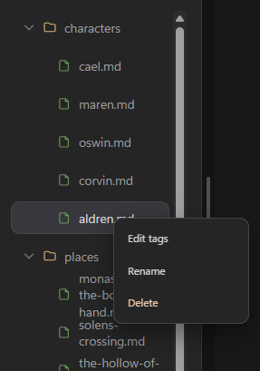
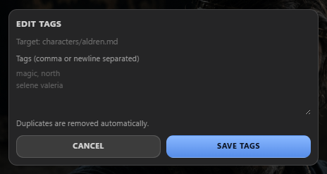

Trama dynamically indexes and highlights references to your characters, locations, notes, and other lore articles as you type. This helps build a fully cross-referenced wiki out of your narrative documents.
While reference link matching in the editor is fully automatic, you must first manually assign tags to your Lore documents.
Right-click any Lore article in the sidebar file explorer and select Edit tags. This opens the tag editor for that file.

Enter your tags separated by commas or newlines, then click Save Tags. Tags are stored in the document frontmatter and indexed for wiki linking.

You can also assign tags directly in frontmatter: open the Lore document in a text editor and add them under the tags list in the YAML frontmatter (for example, tags: [aragon, ranger]).
Once you have assigned tags to a Lore document, Trama will automatically recognize them in any text document you are editing (such as scenes under book/):
Aragon.book/ and type: "Aragon drew his sword."